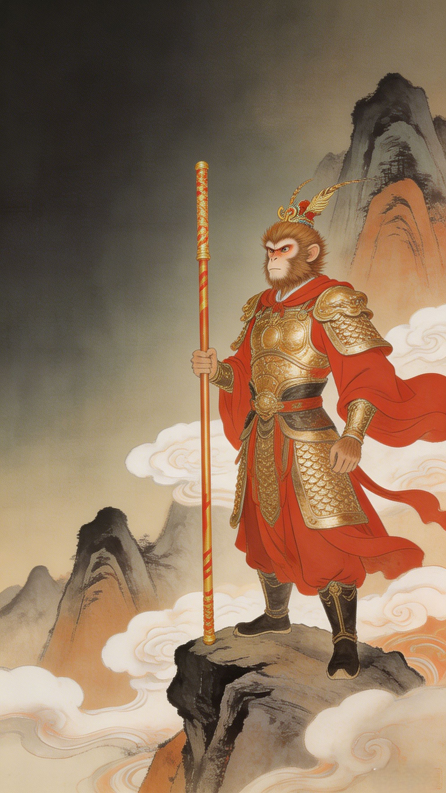
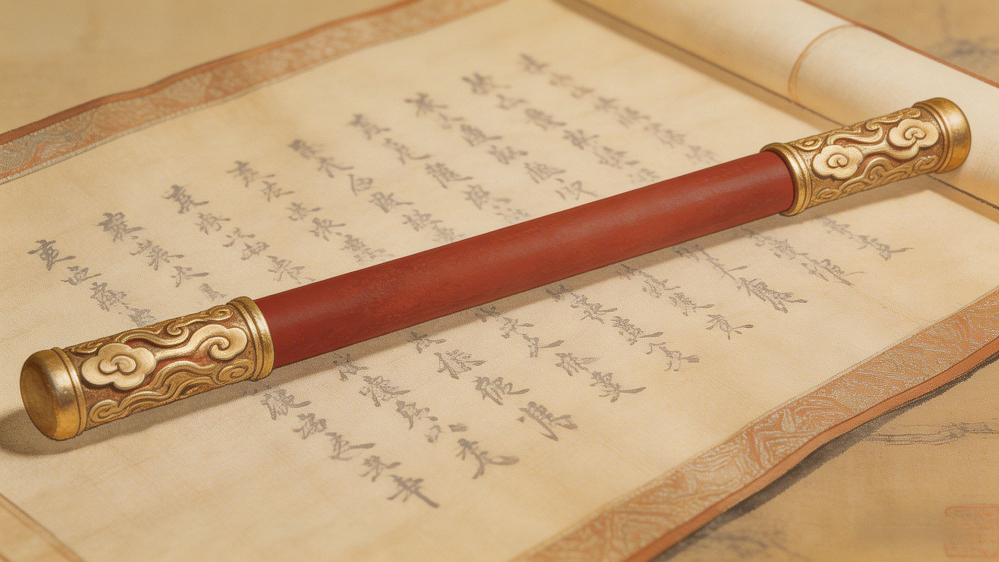
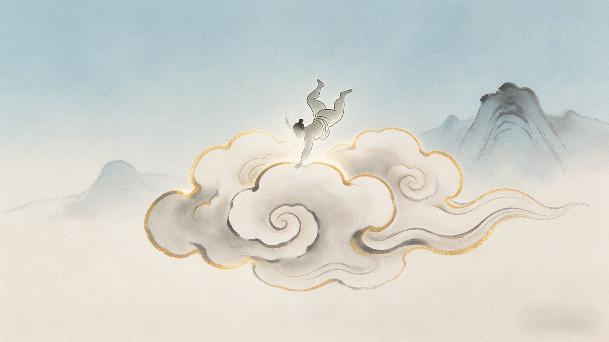
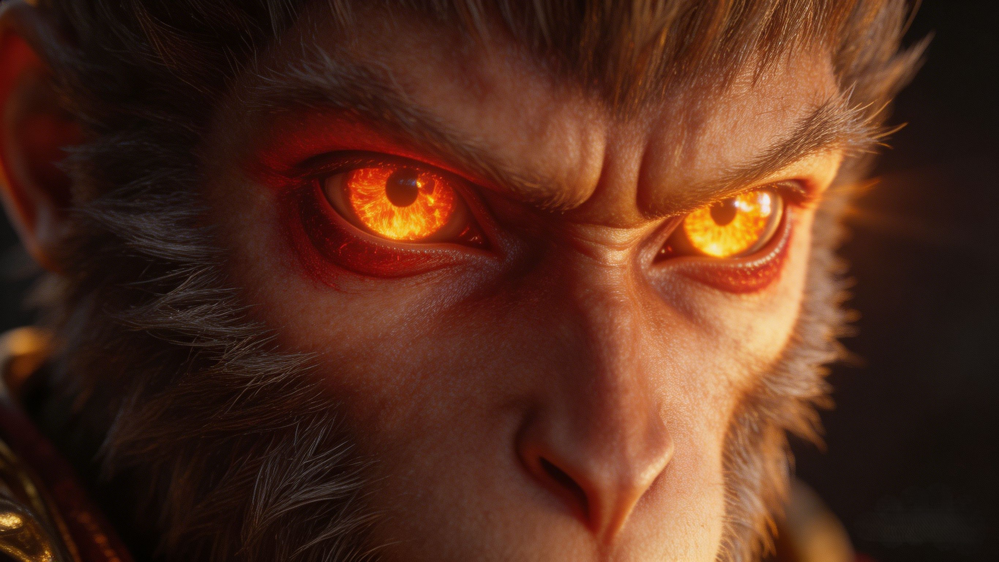

The Battle
One monkey against the entire celestial army. No heavenly general could stop him. No divine weapon could hold him. The day Sun Wukong declared himself equal to heaven — and proved it.
**Sun Wukong's** greatest battles include his rampage through heaven against 100,000 celestial soldiers, his legendary duel with Erlang Shen (the only warrior to match him), and the 81 tribulations fought alongside Tang Sanzang on the Journey to the West. Wukong has never been decisively defeated in single combat by any being except the Buddha.
The Queen Mother of the West hosted the grandest feast in heaven — the Peach Banquet of Immortality. Every deity of rank was invited. Every deity except Sun Wukong. Why? Because the Jade Emperor had given him the empty title "Great Sage Equal to Heaven" but assigned him to guard the celestial stables — a position of zero prestige. When the Monkey King discovered he'd been excluded from the banquet, he understood the truth: heaven never respected him. So he ate the peaches of immortality himself. Drank the celestial wine. Devoured Laozi's pills of longevity. And when the celestial army came to arrest him — he was ready.
The Jade Emperor dispatched the full might of heaven: 100,000 celestial soldiers, the Four Heavenly Kings, Marshal Li Jing, and the child-warrior Nezha. They surrounded Flower-Fruit Mountain. Sun Wukong stood alone at the summit with his Ruyi Jingu Bang — the 8-ton iron pillar he wielded like a toothpick — and laughed. One by one, the celestial generals fell. The Four Heavenly Kings' magical weapons — the sword, the lute, the umbrella, the snake — were useless against him. Nezha, the lotus-born prodigy, was struck down in single combat. By nightfall, the "invincible" army had been shattered by one monkey with a staff.

With the army in ruins, the Jade Emperor turned to his nephew: Erlang Shen, the god with a third truth-seeing eye. Erlang was no ordinary general — he had killed flood dragons, tamed mountains, and was the only being in existence who matched Sun Wukong in the art of 72 transformations. What followed was the most famous duel in Chinese mythology. Sun Wukong became a sparrow. Erlang became a hawk. Wukong became a fish. Erlang became a cormorant. Wukong became a temple — with his eyes as windows and his tail a flagpole. Erlang saw through every transformation with his third eye. The duel raged across heaven and earth until Laozi himself intervened, striking Wukong from behind with his diamond snare while Erlang's hound bit down.

Heaven could not kill an immortal. So they tried to burn the immortality out of him. Laozi — the supreme philosopher-god — placed Sun Wukong inside his Eight Trigrams Furnace, a divine crucible designed to refine elixirs of eternal life. For 49 days, the furnace burned with sacred fire hot enough to reduce gods to ash. Sun Wukong survived by hiding in the Xun (巽) position — the wind trigram, where the flames were weakest. The smoke irritated his eyes, but it did not blind him. When the furnace doors opened on the 49th day, Sun Wukong burst out — alive, enraged, and changed. The smoke had given him Fiery Golden Eyes (火眼金睛) — the ability to see through all illusion, all deception, all evil. What was meant to destroy him had made him more powerful than ever.

What happened next was pure, unbridled destruction. Sun Wukong rampaged through the Imperial Palace, swinging his staff at everything that moved. Celestial guards scattered. Ministers fled. The great pillars of heaven cracked under the blows of the Jingu Bang. The Monkey King drove the Jade Emperor himself from his throne and declared: "The Jade Emperor doesn't have to be the Jade Emperor forever. Let me have a turn!" The entire celestial bureaucracy — the most powerful organization in the cosmos — had been brought to its knees by one being who refused to bow. In desperation, the Jade Emperor sent word to the Western Paradise. Only one being in the universe could stop what Sun Wukong had become: the Buddha himself.
The legendary 1964 Shanghai Animation Film Studio classic, digitally remastered — featuring Sun Wukong's battle against Nezha and the celestial army in stunning hand-drawn animation.
Watch on YouTubeDive Deeper